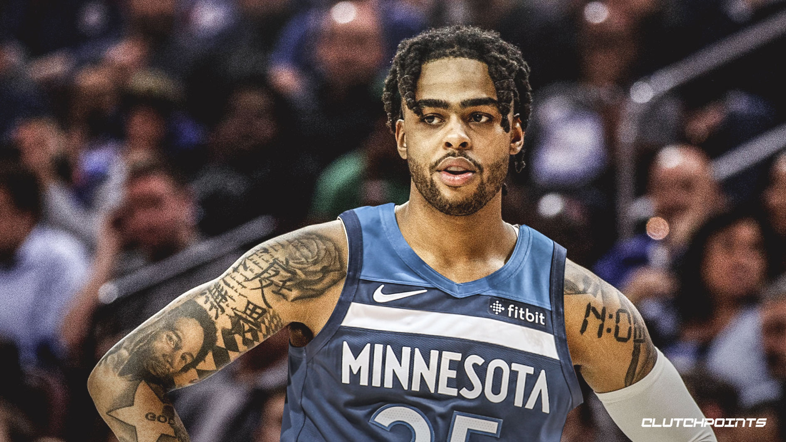
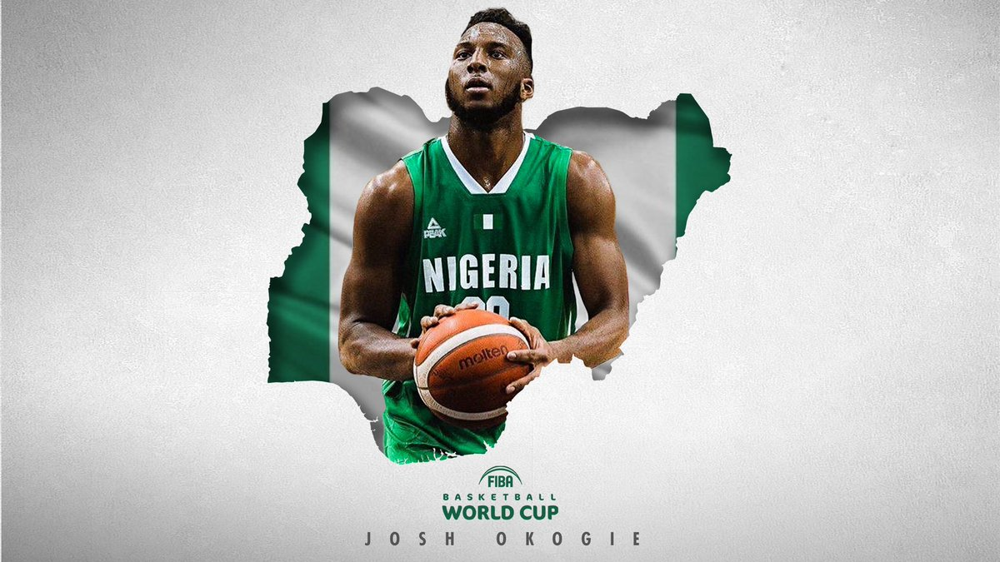
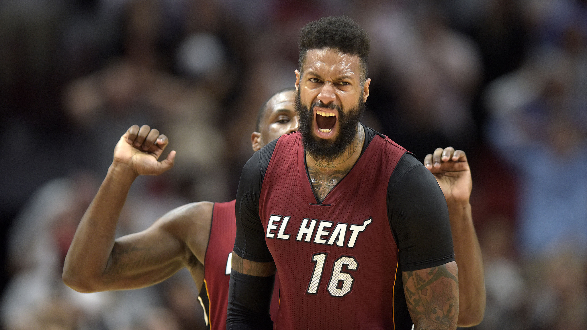
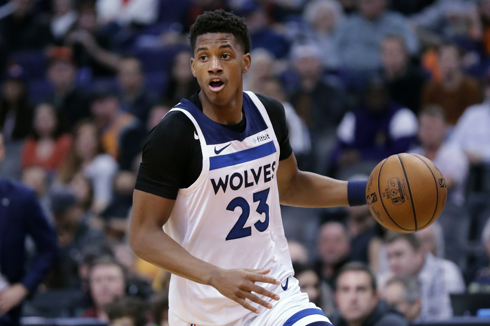
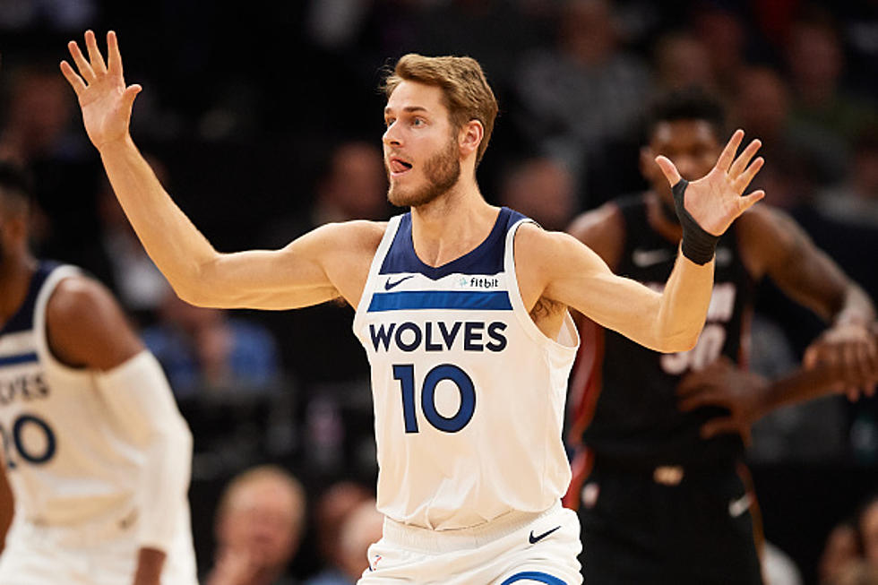
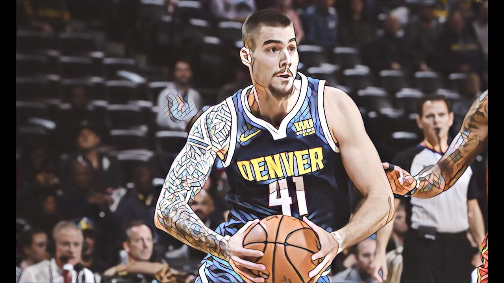

D'Angelo Russell
D'Angelo Danté Russell (born February 23, 1996) is an American professional basketball player for the Minnesota Timberwolves of the National Basketball Association (NBA). He was selected as a McDonalds All-American in 2014, and played college basketball for the Ohio State Buckeyes before being selected with the second overall pick in the 2015 NBA draft by the Los Angeles Lakers. Playing point guard, he was named to the NBA All-Rookie Second Team with the Lakers in 2015. He was traded to the Brooklyn Nets in 2017, and received his first All-Star selection in 2019. In 2020, he was also traded to the Minnesota Timberwolves.
Karl-Anthony Town

Karl-Anthony Towns Jr. (born November 15, 1995) is a Dominican-American professional basketball player for the Minnesota Timberwolves of the National Basketball Association (NBA). He played college basketball for the Kentucky Wildcats. Towns was named to the Dominican Republic national team as a 16-year-old. He was selected with the first overall pick in the 2015 NBA draft by the Minnesota Timberwolves, and went on to be named NBA Rookie of the Year for the 2015–16 season. He has received two All-Star selections.
Josh Okogie
Joshua Aloiye Okogie (born September 1, 1998) is a Nigerian-American professional basketball player for the Minnesota Timberwolves of the National Basketball Association (NBA). As a 6'4" shooting guard, he was not ranked by ESPN in the recruiting class of 2016.
Malik Beasley

Malik JonMikal Beasley (born November 26, 1996) is an American professional basketball player for the Minnesota Timberwolves of the National Basketball Association (NBA). He attended Saint Francis School in Alpharetta, Georgia,and played one season of college basketball for the Florida State Seminoles. Beasley was drafted by the Denver Nuggets with the 19th overall pick in the 2016 NBA draft. After three and a half seasons with the Nuggets he was traded to the Timberwolves.
James Johnson
James Patrick Johnson (born February 20, 1987)[1] is an American professional basketball player for the Minnesota Timberwolves of the National Basketball Association (NBA). He was the starting power forward for the Demon Deacons of Wake Forest University from 2007 to 2009. He was drafted 16th overall in the 2009 NBA draft by the Chicago Bulls.
Omari Spellman

Omari Spellman (born July 21, 1997) is an American professional basketball player for the Minnesota Timberwolves of the National Basketball Association (NBA). He played college basketball for the Villanova Wildcats, winning a national championship in 2018. On June 21, 2018, Spellman was drafted by the Atlanta Hawks.
Jarrett Culver
Jarrett Culver (born February 20, 1999) is an American professional basketball player for the Minnesota Timberwolves of the National Basketball Association (NBA). He played college basketball for the Texas Tech Red Raiders.
Jake Layman
Jake Douglas Layman (born March 7, 1994) is an American professional basketball player for the Minnesota Timberwolves of the National Basketball Association (NBA). He completed his college career for the University of Maryland while earning a bachelor's degree in American Studies.
Juancho Hernangomez
Juan Alberto "Juancho" Hernangómez Geuer (born September 28, 1995) is a Spanish professional basketball player for the Minnesota Timberwolves of the National Basketball Association (NBA). He previously played for Estudiantes of the Liga ACB, and has represented the senior Spain national team.[1]